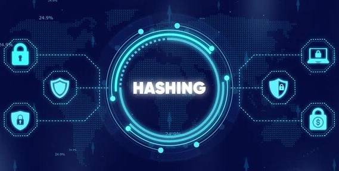
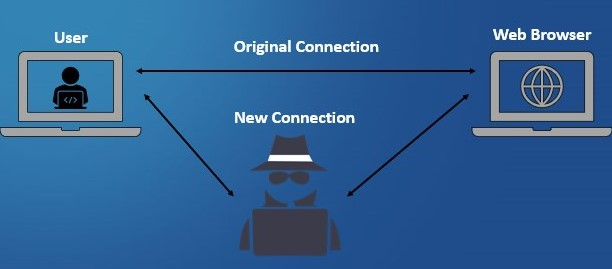

U komunikaciji je potrebno obezbediti da poruka nije menjana ili otvarana od strane neovlašćenog lica i da znamo ko ju je poslao.
Hash funkcija
Kao ulaz hash funkcija ima poruku (veličina poruke nije fiksirana), a kao izlaz daje kriptogram fiksne dužine, koji se naziva hash.
Da bi algoritam bio kriptografski prihvatljiv (siguran) za hash funkciju, mora imati sledeće karakteristike:
- mora biti konzistentan, tj. isti ulaz mora uvek davati isti izlaz
- mora biti slučajan – ili pseudoslučajan
- mora biti jedinstven, tj. mora biti “skoro nemoguće“ naći dve poruke koje daju isti hash
- mora biti jednosmeran, tj. ako se zna izlaz, mora biti ekstremno teško, čak nemoguće, proračunati ulaz

Primer:Korak 1. Korisnik A piše poruku i koristi je kao ulaz za hash funkciju
Korak 2. Rezultat hash funkcije je dodat kao “otisak” poruke koja se šalje korisniku B.
Korak 3. B razdvaja poruku i otisak, i koristi poruku kao ulaz za istu hash funkciju koju je koristio A.
Korak 4. Ako se otisci podudaraju, B može biti siguran da niko nije menjao poruku.
Digitalni potpis (digital signatures)
Kombinacija hash funkcije, kao otiska, sa tehnologijom asimetričnog šifrovanja rezultuje digitalnim potpisom.
Digitalni potpis je šifrovan otisak poruke koji se dodaje poruci može se koristiti kao:
- potvrda identiteta onoga koji šalje i
- integriteta poruke
Korak 1. Boban generiše par javni/tajni ključ
Korak 2. Boban daje svoj javni ključ Anici
Korak 3. Boban piše poruku za Anicu i koristi je kao ulaz za jednosmernu hash funkciju
Korak 4. Boban šifruje izlaz iz hash funkcije (otisak) svojim privatnim ključem. Taj kriptogram predstavlja digitalni potpis.
Boban šalje Anici poruku i digitalni potpis.
Da bi verifikovala da je poruka zaista od Bobana (zapravo da bi verifikovala digitalni potpis) Anica treba da:
Korak 1. Anica razdvaja poruku i digitalni potpis (šifrovan)
Korak 2. Anica koristi Bobanov javni ključ da dešifruje digitalni potpis, što daje originalni otisak
Korak 3. Anica kao ulaz, za istu hash funkciju koju je koristio Boban, koristi poruku koju je primila, što daje otisak te poruke.
Korak 4. Anica poredi oba otiska
Digitalni potpisi ne obezbeđuju tajnost sadržaja poruke, ali često je važnije dokazati ko je izvor poruke nego zaštititi njenu tajnost(npr. online trgovina i bankarske transakcije).
Digitalni sertifikati
Početna razmena javnih ključeva mora biti sigurna - razlog korišćenja digitalnih sertifikata.
Digitalni sertifikat je poruka koja je digitalno potpisana privatnim ključem treće strane kojoj možemo verovati, i u kojoj se kaže da dati javni ključ (koji se, takođe, prenosi porukom) pripada nekome sa specificiranim imenom i skupom atributa.
Sertifikati zahtevaju određeni format i zasnovani su na ITU-T X.509 standardu.
CA (Certificate Authorities) je treća strana, entitet kome možemo verovati, koja garantuje validnost sertifikata - dodeljuje, distribuira, i uklanja (ukoliko informacije koje sadrži nisu više validne) sertifikate. Digitalni sertifikat sadrži sledeće informacije:
- Korisnikov javni ključ!
- Korisnikovo ime
- Datum isticanja važnosti javnog ključa
- Ime izdavaoca ključa (CA koji je izdao digitalni sertifikat)
- Serijski broj digitalnog sertifikata
- Digitalni potpis izdavaoca ključa
- Boban zahteva Anicin digitalni sertifikat od CA
- CA šalje Anicin sertifikat, koji je potpisan sa privatnim ključem CA
- Boban prima sertifikat i verifikuje potpis CA
- Pošto Anicin sertifikat sadrži njen javni ključ, Boban sada ima u posedu “potpisanu” verziju Anicinog javnog ključa
MAC / HMAC
MAC (Message Authentication Code) je kriptografska vrednost koja se koristi za proveru
autentičnosti i integriteta poruke. Kreira se korišćenjem tajnog ključa koji dele pošiljalac i primalac.
HMAC (Hash-based Message Authentication Code) je poseban tip MAC-a koji koristi hash funkcije
(npr. SHA-256) zajedno sa tajnim ključem, čime se postiže veća sigurnost.
- Pošiljalac generiše MAC na osnovu poruke i tajnog ključa.
- Poruka i MAC se šalju primaocu.
- Primalac ponovo računa MAC koristeći isti ključ.
- Ako se vrednosti poklapaju, poruka je autentična i nije menjana.
Man-in-the-Middle napad
Man-in-the-Middle (MITM) napad je situacija u kojoj napadač presreće komunikaciju između dve strane
i može da čita, menja ili ubacuje poruke, a da one toga nisu svesne.
Napadač se "postavlja između" pošiljaoca i primaoca i predstavlja se kao legitimna strana
u komunikaciji.

Primer:- Korisnik misli da komunicira sa serverom.
- Napadač presreće poruku i može je izmeniti.
- Server prima izmenjenu poruku misleći da je originalna.
Ovakvi napadi se sprečavaju korišćenjem enkripcije, digitalnih sertifikata i sigurnih protokola (HTTPS).